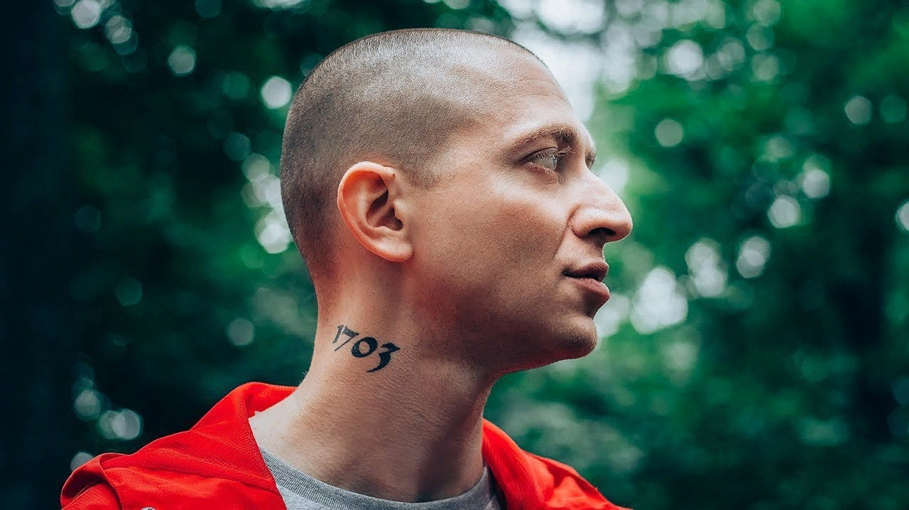
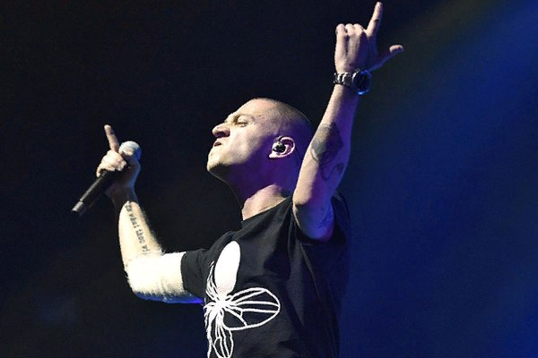
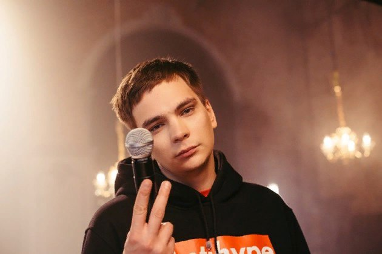
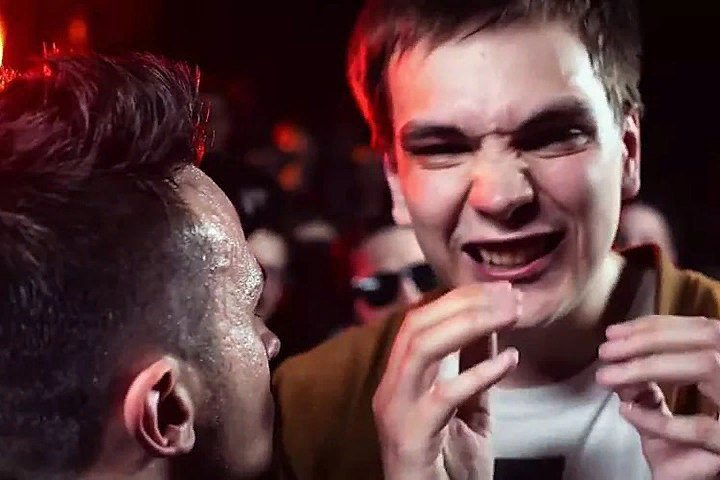
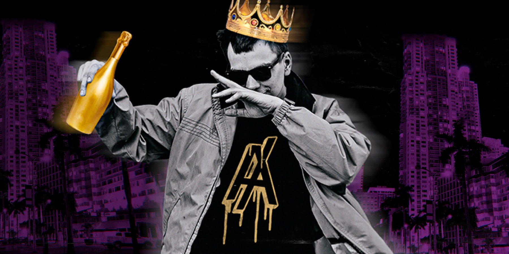

OXXXYMIRON

Мирон Янович Фёдоров, или Oxxxymiron, или, как его любят называть преданные фанаты, Окси, – рэпер из Лондона. Родился в Ленинграде 31 января 1985 года. Начал писать рэп в 13 лет, был известен как МС Миф, затем сделал семилетний перерыв и снова стал заниматься рэпом в 2008 году. Читка Оксимирона отличается необычными рифмами, мощной подачей и flow, а также своеобразным черным юмором. Прославился в первую очередь оригинальными полисиллабическими рифмами, остроумными метафорами, новаторскими мотивами и богатым словарным запасом. Ни при каких обстоятельствах не раскрывает суть аллюзий и метафор в своих текстах. В треке «Не говори ни слова» использовал 32 термина из грамматики русского языка.Он работал кассиром, переводчиком, грузчиком, гидом, ларечником, репетитором, конферансье, офисным планктоном. По словам самого Мирона, псевдоним «Oxxxymiron» появился от слова «оксюморон» и его собственного имени. А три «икс» отсылаются к тому, что в его треках много жестокости и непристойностей. Сейчас Окси является одним из менторов нового сезона Versus: Fresh Blood "Война стилей".
Довольно долго не употреблял в своих треках ненормативной лексики, аргументируя это тем, что «без мата обиднее»
ГНОЙНЫЙ

Гнойный – псевдоним Вячеслава Машнова, одного из сильнейших отечественных баттл-рэперов, лидера движения питерских рэп-исполнителей «Антихайп ренессанс», постоянного судьи турнира SlovoSPB. Он выступает также под никами Валентин Дядька, Слава Карелин, Соня Мармеладова, Бутер Бродский, Слава КПСС и другими.
Главный нарушитель спокойствия в русском рэпе, трикстер и тролль прославился после баттла с Оксимироном: хайп вокруг Славы набрал нынешний размах после победы единогласным решением всех судей над соперником, который сам прежде побеждал в каждом баттле. Однако нельзя сказать, что ранее Гнойный был ноунеймом. Как минимум он поучаствовал в двух очень популярных баттлах — против Эрнесто Заткнитесь и Рики Ф. Гнойный выиграл в первом же сезоне SlovoSPB и с тех пор оставался одним из самых ярких представителей этой баттл-лиги. Его соперник по финалу, ныне глава этой лиги Ден Чейни, сегодня называет Славу законодателем трендов в баттлах: «Во многом благодаря ему представление о том, каким должен быть настоящий баттл, у нас постоянно эволюционировало». Соня Мармеладова любит сочинять пародии, писать диссы, например дисс на Соболева, который появился в сети совсем недавно,провоцировать, задирать.
